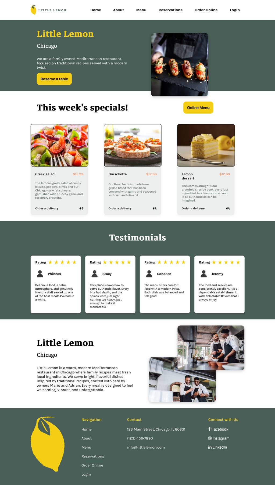
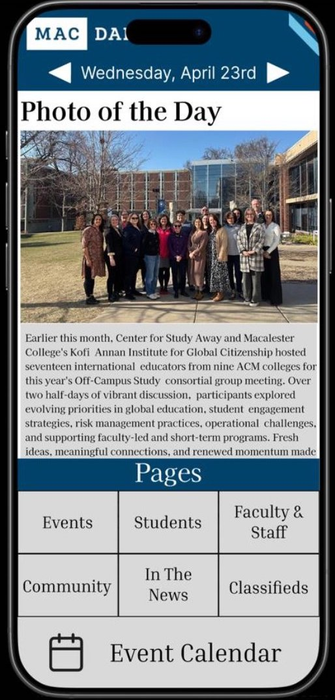
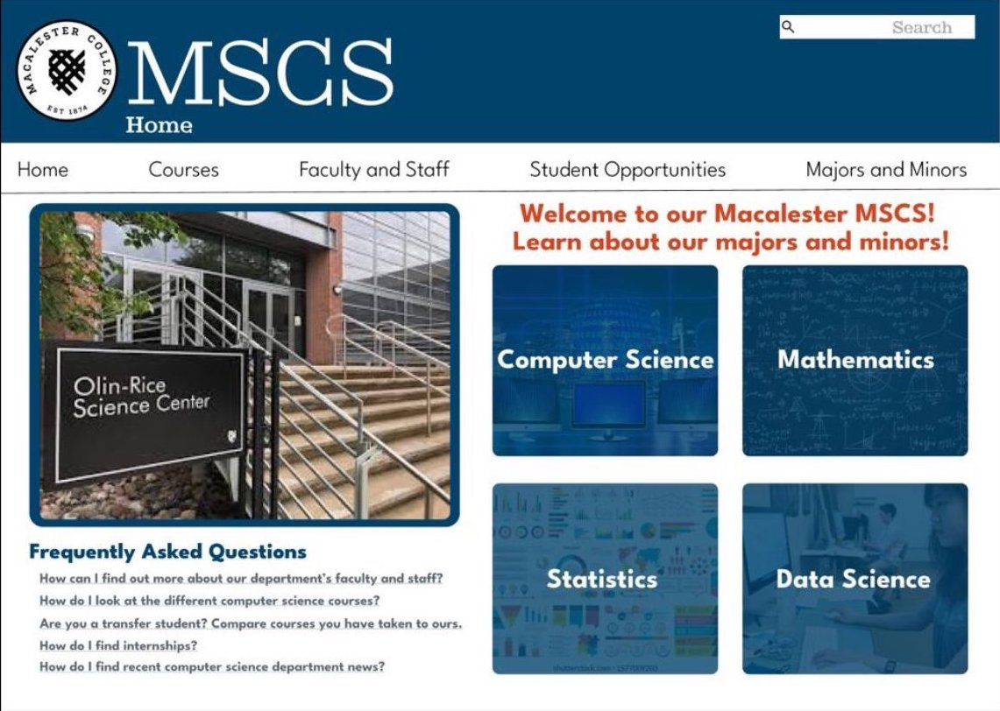

Turning ideas into products people actually enjoy using.
I'm an entry-level UX designer and recent Macalester College graduate, with a computer science degree and a background in psychology, a combination that lets me understand how systems work and how people think, feel, and interact with them. I care about research, prototyping, and testing in equal measure, and I build experiences that are intuitive, accessible, and quietly delightful.
Designing and building web & mobile experiences, most recently a full restaurant ordering & reservations site.
UX research · Rapid prototyping · Usability testing · Accessibility · Front-end development
Greater Minneapolis-St. Paul Area
Open to on-site & remote opportunities
A few things I've shaped from research to shipped screen

Little Lemon
A full restaurant website with a menu, reservations, and ordering, built as my Meta Front-End Developer capstone project.
View case study →
Redesigning the MacDaily
Turning a dense daily email into a navigable app, validated through two rounds of usability testing.
View case study →
MSCS Department Homepage
A heuristic-driven redesign for prospective transfer students, refined across two usability rounds and stakeholder review.
View case study →